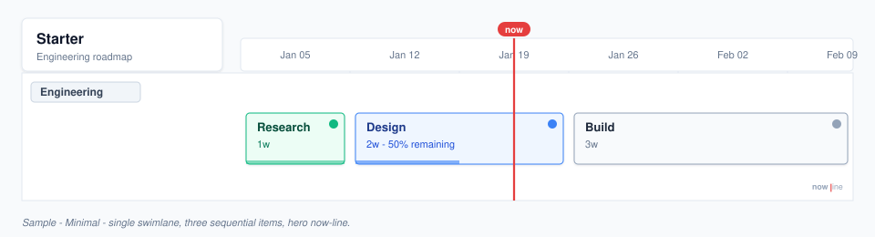
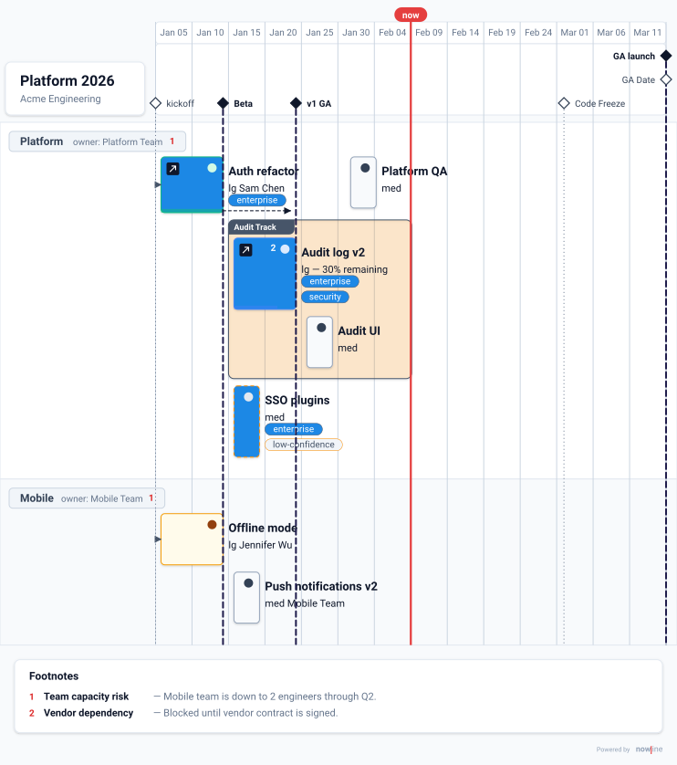
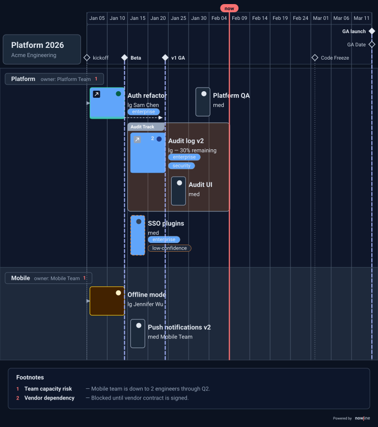
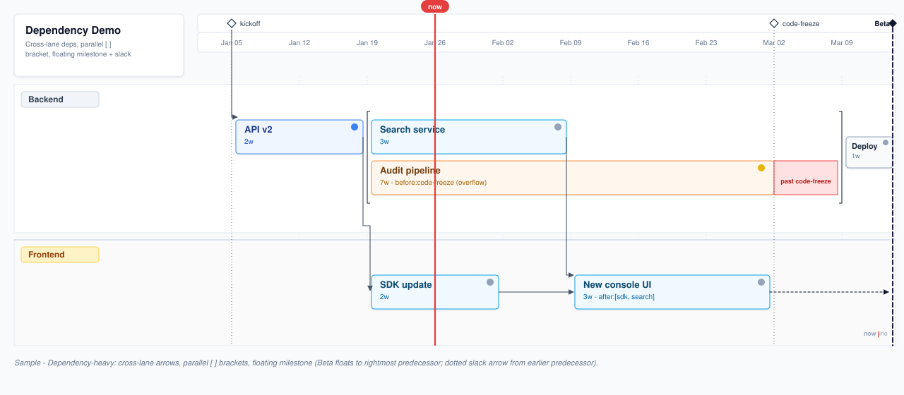
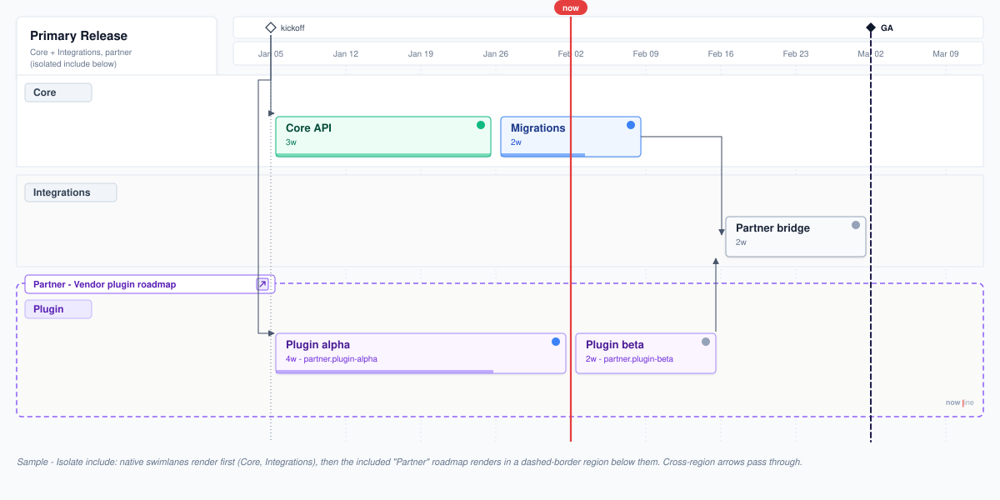

Five hand-drawn SVG roadmaps that stress the decisions in specs/rendering.md. These are for critique before the real layout engine lands — they are not generated from the DSL yet.
The baseline: single swimlane, three items, hero now-line. Tests whether a "boring" roadmap still feels crisp.

nowline v1 roadmap "Starter" start:2026-01-05 scale:1w swimlane engineering "Engineering" item research "Research" duration:1w status:done item design "Design" duration:2w status:in-progress remaining:50% item build "Build" duration:3w status:planned
done/in-progress/planned) is not rendered; only the colored dot + duration/remaining. The dot's color carries the status name.The canonical DSL sample: header logo, anchors, milestones, parallel + styled group, labels, footnotes, statuses, owners, links.

nowline v1 config style enterprise "Enterprise readiness" bg: blue text: white style risky border: dashed fg: orange style concurrent bracket: solid default item shadow:subtle default label style:subtle roadmap platform-2026 "Platform 2026" author:"Acme Engineering" logo:"./brand/acme.svg" start:2026-01-06 scale:2w calendar:business person sam "Sam Chen" person jen "Jennifer Wu" team platform "Platform Team" team mobile "Mobile Team" anchor kickoff date:2026-01-06 anchor code-freeze "Code Freeze" date:2026-05-01 anchor ga-date "GA Date" date:2026-06-01 duration m length:1w duration l length:2w duration xl length:1m label enterprise style:enterprise label security style:enterprise label low-confidence style:risky status handoff "Handoff" // custom status swimlane platform owner:platform item auth-refactor "Auth refactor" duration:l after:kickoff \ status:done owner:sam labels:enterprise \ link:https://github.com/acme/auth/issues/123 parallel after:auth-refactor group audit-track "Audit Track" labels:security parallel // audit-log and audit-ui run concurrently inside the group item audit-log "Audit log v2" duration:l before:code-freeze \ remaining:30% labels:[enterprise, security] \ link:https://wiki.acme.com/audit item audit-ui "Audit UI" duration:m item sso "SSO plugins" duration:m labels:[enterprise, low-confidence] item platform-qa "Platform QA" duration:s status:handoff swimlane mobile owner:mobile item offline "Offline mode" duration:l after:kickoff \ owner:jen status:at-risk remaining:60% item push-v2 "Push notifications v2" duration:m owner:mobile milestone beta "Beta" after:auth-refactor milestone v1-ga "v1 GA" after:[auth-refactor, audit-log] milestone ga-launch "GA launch" date:2026-06-01 footnote "Vendor dependency" on:audit-log description "Blocked until vendor contract is signed." footnote capacity-risk "Team capacity risk" on:[mobile, platform] description "Mobile team is down to 2 engineers through Q2."
after:-driven milestone sits at the rightmost predecessor's end — Beta at auth-refactor's end, v1 GA at audit-log's end. Earlier predecessors get a dark dotted arrow rightward to the line (visible: auth-refactor → v1 GA).parallel so audit-log and audit-ui both start at the group's left edge and stack vertically (same start time, different durations). The group's inner dashed orange rails show the nested parallel boundary. The outer parallel (group + sso) has no style: applied, so it resolves to bracket:none and renders with no visual connector — its structure is conveyed entirely by the two tracks stacking at a shared start x.owner: platform renders as owner: Platform Team. owner: sam renders as Sam Chen. Anchors with a string title (anchor code-freeze "Code Freeze") display "Code Freeze"; a title-less anchor (anchor kickoff) falls back to the id. Same rule for milestones, labels, groups, and swimlanes.link: value. The tile color encodes the provider (GitHub on auth-refactor, generic on audit-log — both ink in this sample, but the renderer also tints Linear indigo and Jira blue when those providers appear). One glyph, many tints — keeps the item bar legible and prevents a glyph-soup when providers multiply.done, in-progress, planned, at-risk, blocked have universally-understood colors, so their names add noise to every item bar. The dot alone is sufficient. Custom statuses (user-declared via status handoff "Handoff") still render their title as text next to the dot, since the user's custom color wouldn't be self-explanatory. Platform QA demonstrates the custom case — purple dot + "Handoff" label.Same layout, dark palette. Now-line stays red by spec; everything else inverts. Good sanity check for contrast on chiclets and status dots.

// Same DSL as sample 02. // Rendered with: nowline render roadmap.nowline --theme dark // Light theme palette (for reference): // surface = #f8fafc panel = #ffffff // ink = #0f172a ink-muted = #64748b // grid = #e2e8f0 now-line = #e53e3e // Dark theme palette: // surface = #0b1220 panel = #111a2e // ink = #e2e8f0 ink-muted = #94a3b8 // grid = #1f2a44 now-line = #e53e3e // Status dots & label bg colors keep the same hue, // but item bar fills shift to darkened tints of the // same hue (e.g. done = #064e3b instead of #ecfdf5).
#1f2a44 vs. the panel at #111a2e — subtle enough? They largely disappear in this mockup, which might be intentional or too far.Cross-swimlane arrows, explicit [ ] brackets on the parallel block (with group-like padding), a floating milestone driven purely by after:, a dotted slack arrow from an earlier predecessor, and an item-level before: overflow rendered in red.

roadmap "Dependency Demo" start:2026-01-05 scale:1w anchor kickoff date:2026-01-05 anchor code-freeze date:2026-03-02 swimlane backend item api "API v2" duration:2w after:kickoff parallel style:concurrent // bracket:solid; no after: needed item search "Search service" duration:3w item audit "Audit pipeline" duration:7w \ before:code-freeze // overflow → red item deploy "Deploy" duration:1w swimlane frontend item sdk "SDK update" duration:2w after:api item ui "New console UI" duration:3w \ after:[sdk, search] // No date: Beta floats to the rightmost predecessor's end. milestone beta "Beta" after:[deploy, ui]
after:). When a milestone has no explicit date:, it floats to the rightmost predecessor's visual end. Beta has after:[deploy, ui]; deploy is the later predecessor, so Beta's diamond + vertical line land right at deploy's visual end (x=1264). No red — by definition there's no overrun when the milestone lands wherever its predecessors land. This differs from Sample 2, where milestones with dates can be overrun and turn red.ui finishes well before Beta. A dotted ink arrow from ui's visual right to the Beta line (at ui's row midline) communicates "ui finishes with slack; deploy is the binding predecessor." The arrow is dotted (not solid) specifically because it represents waiting time, not a data flow. We don't draw any arrow from deploy — its visual end coincides with Beta by construction.after: on the parallel block is omitted. The parallel block flows immediately after api simply because it's the next construct in the swimlane and api is its spatial predecessor. Writing parallel after:api would be redundant (and slightly misleading — after: on a parallel would imply the whole block waits for all of api which is already the case). We drop it.[ ] with group-like padding. Both sides of the parallel render as proper brackets: [ on the left at logical x=520, ] on the right at logical x=1192. Each bracket has a short top and bottom serif. The brackets extend 12px above the topmost nested item (Search) and 12px below the bottommost (Audit pipeline) — the same vertical padding a styled group uses around its nested items. That framing makes fork + join visually explicit in a single glance, and mirrors the group's visual idiom so the two constructs feel kin.before:code-freeze overflow renders as a red trailing region with a "past code-freeze" label. That communicates the overflow without needing a separate red arrow up to the anchor. Keep this convention for item-level before: overrun?Native swimlanes above and below, a third-party "partner" roadmap rendered inside a dashed-border region. Same timeline. Dependency arrows cross the boundary.

// primary.nowline roadmap "Primary Release" start:2026-01-05 scale:1w anchor kickoff date:2026-01-05 // Native swimlanes render FIRST, in declaration order. swimlane core "Core" item core-api "Core API" duration:3w after:kickoff item migrations "Migrations" duration:2w after:core-api swimlane integrations "Integrations" item bridge "Partner bridge" duration:2w \ after:[migrations, partner.plugin-beta] milestone ga "GA" after:bridge // Isolated includes render LAST, below all native lanes, in include order. include "partner.nowline" config:isolate roadmap:isolate // partner.nowline (isolated — renders inside dashed region at bottom) roadmap "Vendor plugin roadmap" start:2026-01-05 swimlane plugin "Plugin" item plugin-alpha "Plugin alpha" duration:4w after:kickoff item plugin-beta "Plugin beta" duration:2w after:plugin-alpha
#8b5cf6) to distinguish isolated content from native content. Is a distinct accent color the right treatment, or should the dashed border just use the neutral ink color?plugin-beta → bridge) cross the dashed border with no break. The long-haul kickoff → plugin-alpha arrow routes around the left edge of the isolate region to avoid piercing the Core API and Integrations bars. Keep that auto-routing behavior?